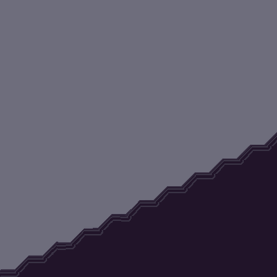

Rain World: Singularity Bomb
I made the Singularity Bomb and the Cloak for Rain World: Downpour. It started as community work for More Slugcats and ended up in the official DLC when that shipped on January 19, 2023.
Rain World
Rain World is dark and unfair, and somehow still beautiful in that decaying way that sticks with you. You spend a long time fighting the ecosystem before you figure out how it works and what role you play in it. After that it shifts a bit: you stop treating everything as an enemy and start living inside the world instead. It's not for everyone, and newcomers get chewed up for a while, but I got attached anyway.

Digging in the code
The game felt special enough that I wanted to see what was hiding under it, not just in the map but in the code. I opened it in dnSpy and started reading how Joar Jakobsson had put the C# together. I'd tweak a rock's impact force, see what happened when it hit something, push numbers until the behaviour felt wrong in an interesting way. At some point I wondered what would happen if I took the explosive bits from a grenade and put them on something stranger. That experiment turned into the singularity bomb.
The singularity bomb
A throw-and-instant-boom weapon felt lame after the first few tests. I wanted it to have a little show first:
- Throw the bomb
- It lands, then floats up a bit
- Effects build: lightning, distortion, things getting pulled in
- It detonates, and something hangs around afterward

What shipped is roughly that sequence: a delayed blast of about four seconds, a pull into a kill zone that can take Guardians, stun and knockback for everything else in the room, and visual distortion that hangs around after it stops being lethal. Community work that made it into Downpour. I'm credited for the Singularity Grenade and the Cloak.
The Cloak
Alongside the bomb I also made the Cloak, a ragged white garment you find in Submerged Superstructure. It's cosmetic while you wear it and doesn't take a hand slot. You can gift it to Looks to the Moon, and she thanks you and puts it on. Quiet little story beat next to a loud weapon, both from the same stretch of digging through the code.